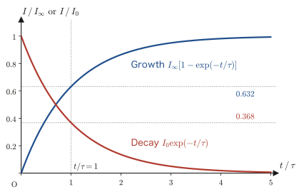
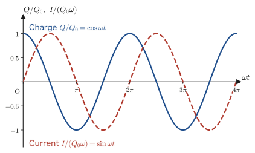
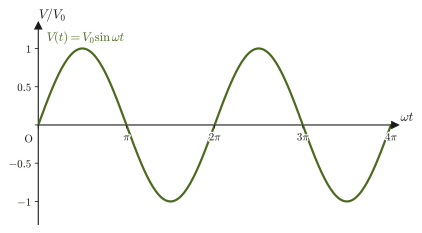

Chapter 40Electromagnetic Induction and Inductance
A bicycle light shines simply because the rotation of the tire turns a magnet inside the dynamo. The IC card used at a train ticket gate responds merely when it is held near the card reader, even though it carries no battery. An IH (electromagnetic induction heating) cooker heats the pot itself simply by passing an alternating current through a coil. Electricity generated at power plants reaches homes with its voltage stepped up and down by transformers. All of these exploit one and the same phenomenon—when a magnetic field (magnetic flux) changes, an electromotive force (emf) that tends to drive a current there is produced. In high school physics, you should already have learned this phenomenon, in the form of formulas, as Lenz's law and Faraday's law: “when the magnetic flux through a coil changes, an induced electromotive force is produced.” In this chapter we dig one level deeper into this phenomenon and derive it as an equation (one of Maxwell's equations) that expresses the relation between the electric and magnetic fields themselves.
In the preceding chapters we treated the electric field as produced by stationary charges and the magnetic field as produced by steady currents, independently of each other (Chapter 35–Chapter 39). Electromagnetic induction, however, shows that a time-varying magnetic field produces an electric field—the electric and magnetic fields are not two independent fields but different aspects of a single, intertwined “electromagnetic field.” This view is carried through even more thoroughly in the formulation of electromagnetism based on the special theory of relativity, which we study in Chapter 58.
Once we understand the physics of electromagnetic induction, we introduce, as circuit elements that make use of it, the emf produced in a coil itself (self-inductance) and the emf between two coils (mutual inductance). A coil stores energy in the form of a magnetic field; an RL circuit, consisting of a resistor and a coil, exhibits exponential transient phenomena, and an LC circuit, consisting of a coil and a capacitor, exhibits electrical oscillations—which follow, remarkably, exactly the same mathematics as the mass–spring system studied in Chapter 7. Finally, we close the chapter by looking at how the generator and the transformer, the representative applications of electromagnetic induction, work.
- The discovery of electromagnetic induction (Faraday), and how to use Lenz's law to determine the direction of the induced current from the direction of the change in magnetic flux (four cases of a magnet and a coil)
- The procedure for deriving Faraday's law of induction $V=-N\dfrac{\dd\Phi}{\dd t}$ all the way to its differential form $\rot\bm E=-\pdiff{\bm B}{t}$ (one of Maxwell's equations; $\pdiff{\bm B}{t}$ is the partial derivative of $\bm B$ with respect to time $t$ alone, taken with the position held fixed), starting from the line integral $\oint_C$ of the electromotive force (the line integral once around a closed curve $C$), the surface integral of the magnetic flux, and Stokes's theorem; and the calculation of the induced electric field produced by a changing magnetic field
- Derivation of the induced electromotive force produced in a conducting rod moving across a uniform magnetic field from two independent standpoints—“the change in magnetic flux due to the swept area” and “the Lorentz force acting on the free electrons”—confirmation that both give the same result $V=vB\ell$, and the braking force acting on the moving rod and the energy balance
- The definitions and calculation of the self-inductance $L$ (taking the solenoid as an example) and the mutual inductance $M$, and the correspondence between the energy $\frac12LI^2$ stored in a coil and the energy density of the magnetic field $B^2/(2\mu_0)$
- Transient phenomena in RL circuits (exponential rise and decay of the current) and electrical oscillations in LC circuits (the mathematical correspondence with the equation of motion for simple harmonic motion)
- The operating principles of the generator (generation of an alternating emf and its effective value) and the transformer (voltage conversion by the turns ratio)
Source notes: Yasuhide Mochizuki, Physics Notes: Electromagnetism, pp. 27–29 (p. 30 is blank).
40.1 The Discovery of Electromagnetic Induction and Lenz's Law
In Chapter 38 we learned that when a current flows, a magnetic field arises around it (the Biot–Savart law and Ampère's law). The British physicist Michael Faraday posed the converse question—“Might a magnetic field (magnetic flux) produce a current?” In 1831 Faraday wound two coils on an iron ring and found that the needle of a galvanometer connected to one coil deflected only at the instant a switch in the battery circuit connected to the other coil was closed and at the instant it was opened. The response appears only while the current is changing; while a constant current keeps flowing, nothing happens. The same phenomenon occurs when a magnet brought near a coil is moved. In this way, the phenomenon in which a current flows in a coil when a change in magnetic flux is produced is called electromagnetic induction; the current that arises is called the induced current, and the action that tends to drive a current is called the induced electromotive force.
Definition 40.1: Electromagnetic induction, induced current, and induced electromotive force
When the magnetic flux $\Phi$ through a circuit (the quantity defined in Chapter 38, the surface integral of the magnetic flux density $\bm B$ over the surface $S$ enclosed by the circuit, $\Phi=\iint_S\bm B\cdot\bm n\,\dd S$) changes with time, an electromotive force arises in that circuit, and if the circuit is closed, a current flows. This phenomenon is called electromagnetic induction, the current produced is called the induced current, and the electromotive force produced is called the induced electromotive force. The induced electromotive force is denoted by the same symbol $V\ [\mathrm{V}]$ that we have used for the potential difference (voltage) in the preceding chapters (the electromotive force and the potential difference are physically different concepts, but since the context tells which one is meant, we use the same letter. The quantity of the same kind as the battery emf $\mathcal E$ of Chapter 37 is written $V$ in this chapter so that it can be read in continuity with the voltage).
Which way, then, does the induced current flow? This is decided by Lenz's law, stated below.
Law 40.1: Lenz's law
When the magnetic flux through a coil is changed from outside, an induced electromotive force arises in the direction that cancels that change, and an induced current flows.
If we remember Lenz's law only through the words “the direction that cancels the change in magnetic flux,” it is easy to get the sign wrong, so it is good to form the habit of drawing a figure and checking in the concrete situation every time. Let us go through the four most basic cases, in which a bar magnet is brought toward or moved away from a coil. In what follows, the magnet approaches from the left of the figure, and the direction in which the current circulates is described as clockwise or counterclockwise “as seen from the magnet's side (the left side of the coil).” In the figures, the thick lines of the coil represent the wire on the front side, and the thin gray lines represent the wire on the back side.
The tool for checking the direction is the right-hand rule (Chapter 38). “If you turn a right-handed screw in the direction of the current, the direction in which the screw advances is the direction of the magnetic field produced by the current”—if the magnetic field points to the left, then, as seen from the left (the magnetic field comes toward you), the current flows counterclockwise.
40.1.1 (i) When the north pole of a magnet approaches the coil
The magnetic flux through the coil gradually increases in the direction from the north-pole side of the magnet toward the coil (the rightward direction in Figure 40.1). By Lenz's law, the coil tries to cancel this increase—that is, it tries to reduce the rightward magnetic flux. For this it suffices that the induced current flow so that the coil itself produces a leftward magnetic field. By the right-hand rule, the current that produces a leftward magnetic field is counterclockwise as seen from the magnet's side, and on the front side of the coil (the thick lines in the figure) it flows upward.
40.1.2 (ii) When the north pole of a magnet moves away from the coil
This time the rightward magnetic flux through the coil gradually decreases. By Lenz's law, the coil tries to cancel this decrease—that is, it tries to increase the rightward magnetic flux. For this it suffices that the induced current flow so that the coil itself produces a rightward magnetic field. This is an induced current in exactly the opposite direction to that of Figure 40.1—clockwise as seen from the magnet's side (downward on the front side).
40.1.3 (iii) When the south pole of a magnet approaches the coil
When the south pole faces the coil, the magnetic field lines are drawn into the south pole, so the magnetic field (magnetic flux) through the coil points toward the magnet's side, that is, leftward (the red arrows in Figure 40.2). As the magnet approaches, this leftward magnetic flux increases. By Lenz's law, the coil tries to cancel this increase—that is, to weaken the increase of the leftward flux by producing a rightward magnetic field. The current that produces a rightward magnetic field is clockwise as seen from the magnet's side (downward on the front side), and flows as in Figure 40.2.
40.1.4 (iv) When the south pole of a magnet moves away from the coil
In this case, the leftward magnetic flux through the coil gradually decreases. By Lenz's law, the coil tries to cancel this decrease—that is, it tries to increase the leftward flux by producing a leftward magnetic field. Therefore the induced current has exactly the opposite direction to that in Figure 40.2 (it is counterclockwise as seen from the magnet's side), and a current flows in the same direction as in case (i) (Figure 40.1). To summarize: the direction of the induced current is opposite for “the magnet approaching” and “the magnet moving away” even when the same pole faces the coil, and it is also opposite for “the north pole facing the coil” and “the south pole facing the coil”—in the end, (i) and (iv) give induced currents in the same direction, and (ii) and (iii) give induced currents in the same direction (opposite to that of (i)). The four cases are shown together in Figure 40.3 and Table 40.1.
| Case | Direction of flux | Change in flux | Field to be produced | Induced current (as seen from the magnet's side) |
|---|---|---|---|---|
| (i) North pole approaches | rightward | increasing | leftward | counterclockwise |
| (ii) North pole moves away | rightward | decreasing | rightward | clockwise |
| (iii) South pole approaches | leftward | increasing | rightward | clockwise |
| (iv) South pole moves away | leftward | decreasing | leftward | counterclockwise |
Caution: Avoiding confusion among the four cases
When applying Lenz's law, it is best to check in order two independent factors: (1) the direction of the magnetic flux (which pole of the magnet faces the coil), and (2) whether the flux is increasing or decreasing (whether the magnet is approaching or moving away). If you look at only one of them and memorize something like “a current in the same direction always flows when the magnet approaches,” you are likely to get the sign wrong in cases involving the south pole, such as (iii) and (iv).
Intuition: Why must the direction be one that “cancels the change”?
Suppose Lenz's law were the other way around—suppose the induced current flowed in the direction that reinforces the change in flux. What would happen? In case (i), for example, the closer the magnet came, the more the magnetic field produced by the induced current would boost the increase in flux, and the induced current would grow ever stronger. Since a coil carrying an induced current is an electromagnet, a force in the direction that pulls the magnet in would act on the magnet, and the magnet would accelerate by itself and be drawn into the coil. This would mean that the kinetic energy and the Joule heat produced by the current keep increasing without limit even though no energy is supplied from outside, which violates the law of conservation of energy. The reason Lenz's law must be “the direction that cancels the change” ultimately lies in this law of conservation of energy (try explaining this point in your own words in Exercise 40.6).
Application: Eddy-current braking (electromagnetic brakes) and IH cookers
Lenz's law holds even without a closed circuit such as a coil; it applies inside a conductor itself. When a conducting plate or disk is moved in a magnetic field, localized induced currents that try to cancel the change in magnetic flux—eddy currents—arise inside the conductor. The interaction of these eddy currents with the magnetic field (the Ampère force of Chapter 39) always acts in the direction that opposes the motion of the conductor. Making use of this are the electromagnetic brakes used as the contactless brakes of roller coasters and railways, in the damping devices of electronic balances, and so on. These brakes are characterized by the fact that, because friction is not used, the parts do not wear out, and that the faster the motion, the larger the eddy currents become and the stronger the braking force (the reason for this “proportional to the velocity” is checked in Example 40.1 and Exercise 40.8).
Another familiar application of eddy currents is the IH (induction-heating) cooker. When an alternating current is passed through the coil inside the cooker, the magnetic field produced by the coil changes in time while reversing its direction, and eddy currents are induced in the bottom of the metal pot placed on top of it. Because the eddy currents generate Joule heat (Section 37.4) in the pot's own electrical resistance, the pot itself heats up without any flame.
Example 40.1: Dropping a magnet through a conducting pipe
A small bar magnet (mass $m$) is dropped gently into a vertically standing pipe made of a metal, such as aluminum, that conducts electricity but is not attracted to magnets. Compared with the case in which a metal rod that is not a magnet, with the same shape and the same mass, is allowed to fall freely in the pipe, this magnet takes longer to fall. (1) Explain qualitatively the reason for this using Lenz's law. (2) Assuming that the braking force can be written as $F=\gamma v$ in terms of the speed $v$ of the magnet ($\gamma$ is a positive constant), find the time dependence $v(t)$ of the magnet's speed and the terminal velocity.
Solution. (1) When the magnet falls through the pipe, the magnetic flux through the wall of the pipe near the magnet changes from moment to moment (it increases in the part the magnet is approaching and decreases in the part it is moving away from). Since the pipe is a conductor, eddy currents are induced in the pipe wall in the direction that cancels this change in flux (the Application on eddy-current braking in this section). By Lenz's law, the magnetic field produced by these eddy currents acts so as to oppose the cause of the change in flux—the falling motion of the magnet. That is, the eddy currents exert an upward force $F$ on the magnet and decelerate it. (By the law of action and reaction, the pipe wall receives a downward force from the magnet.) With a metal rod that is not a magnet, the flux through the pipe wall does not change, so no eddy currents arise and the rod falls freely. Therefore the magnet falls more slowly.
(2) Let $v$ be the speed of the magnet. The rate of change $\dd\Phi/\dd t$ of the flux through the pipe wall is proportional to $v$, and by Faraday's law (Law 40.2 in the next section) the induced electromotive force is also proportional to $v$. Since the resistance of the pipe is constant, by Ohm's law the eddy current is also proportional to $v$, and the magnitude of the magnetic force that the eddy currents receive from the magnet (that the magnet receives from the eddy currents) is also proportional to $v$. This is $F=\gamma v$. Taking downward as positive, the equation of motion of the magnet is
$$ m\diff{v}{t}=mg-\gamma v $$This is a first-order linear differential equation of the same form as that for a fall with air resistance proportional to the velocity (Section 5.2). Choosing the constant speed $v_{\mathrm t}=mg/\gamma$ at which the right-hand side vanishes and setting $w=v-v_{\mathrm t}$, we obtain $m\,\dd w/\dd t=mg-\gamma(w+v_{\mathrm t})=-\gamma w$, which is solved by $w=w(0)\exp(-\gamma t/m)$. From the initial condition $v(0)=0$ we have $w(0)=-v_{\mathrm t}$, so we obtain
$$ v(t)=\frac{mg}{\gamma}\left[1-\exp\left(-\frac{\gamma t}{m}\right)\right] $$As $t\to\infty$, $v\to v_{\mathrm t}=mg/\gamma$ (the terminal velocity), and the magnet falls at a constant speed because gravity and the braking force balance. Also, from the equation of motion, $\dd v/\dd t=g-\gamma v/m\lt g$, so $v(t)\lt gt$ at every time, which also confirms mathematically that the fall takes longer than free fall. This exponential form with time constant $m/\gamma$ is exactly the same as the form of the rise of the current in the RL circuit in Section 40.8.
40.2 Faraday's Law of Induction — From Integral to Differential Form
Lenz's law in the previous section tells us the direction of the induced current, but not the magnitude of the induced electromotive force. What gives this quantitatively is Faraday's law of induction.
Law 40.2: Faraday's law of induction
When the magnetic flux through a one-turn circuit is $\Phi\ [\mathrm{Wb}]$ (weber), the induced electromotive force $V$ generated in the circuit is given by
\begin{equation} V=-\diff{\Phi}{t} \label{eq:40-faraday-1turn} \end{equation}If the circuit is a coil of $N$ turns, then, assuming that the same flux $\Phi$ passes through each turn, this is the same as having $N$ electromotive forces connected in series, so the total electromotive force is $N$ times as large:
\begin{equation} V=-N\diff{\Phi}{t} \label{eq:40-faraday-Nturn} \end{equation}The minus sign builds Lenz's law (that an electromotive force arises in the direction that reduces the flux when the flux is increasing, and in the direction that increases it when the flux is decreasing) into the equation—the meaning of the sign is stated precisely in the next paragraph.
To use the minus sign in Eq. \eqref{eq:40-faraday-1turn} correctly, we must fix in advance the positive direction of $\Phi$ (the direction of the normal $\bm n$ to the surface $S$) and the positive direction of the electromotive force $V$ (and hence of the induced current), linking them by the right-hand rule: when the fingers of the right hand are curled in the direction in which the circuit is traversed (the positive direction of $C$), the direction in which the thumb points is taken as the positive direction of the normal $\bm n$ to the surface $S$. For example, for the coil of Figure 40.1, if we wrap the right hand along the direction of the induced current $I$ (counterclockwise as seen from the magnet's side), the thumb points leftward—this agrees exactly with the fact that the magnetic field produced by the induced current is in the direction that cancels the increase of the magnet's flux. If the directions are fixed in this way, the minus sign alone in Eqs. \eqref{eq:40-faraday-1turn} and \eqref{eq:40-faraday-Nturn} already expresses Lenz's law correctly (the strength of Law 40.2 is that the direction of the induced current is determined by the sign in the equation alone, without having to check the direction against a figure each time).
Example 40.2: Computing the induced electromotive force from a change in flux
The magnetic flux through a coil of $N=200$ turns increased at a constant rate from $\Phi_1=2.0\times10^{-4}\ \mathrm{Wb}$ to $\Phi_2=6.0\times10^{-4}\ \mathrm{Wb}$ during $\Delta t=0.050\ \mathrm{s}$. Find the magnitude of the induced electromotive force generated in the coil during this time.
Solution. Since the flux changes at a constant rate, $\dd\Phi/\dd t$ is a constant and can be replaced by the average rate of change:
$$ \diff{\Phi}{t}=\frac{\Phi_2-\Phi_1}{\Delta t}=\frac{6.0\times10^{-4}-2.0\times10^{-4}}{0.050}\ \mathrm{Wb/s}=\frac{4.0\times10^{-4}}{0.050}\ \mathrm{Wb/s}=8.0\times10^{-3}\ \mathrm{Wb/s} $$From Eq. \eqref{eq:40-faraday-Nturn} (we omit the sign because we only want the magnitude),
$$ \abs{V}=N\abs{\diff{\Phi}{t}}=200\times8.0\times10^{-3}\ \mathrm{Wb/s}=1.6\ \mathrm{V} $$(That $1\ \mathrm{Wb/s}=1\ \mathrm{V}$ is a relation between units that is defined by Eq. \eqref{eq:40-faraday-1turn} itself.)
From here on, we rewrite Eq. \eqref{eq:40-faraday-1turn} as a relation among the “fields” themselves, the electric field and the magnetic field (one of Maxwell's equations). In this section, however, we consider the case where the circuit (and the surface $S$ that it encloses) is fixed in space and does not move (the case of a moving circuit is treated in the next section).
First, let us express the induced electromotive force $V$ in terms of the electric field $\bm E$. The electric field $\bm E$ does not exist only inside the wire of the circuit; it is a field that exists at every point of space, even where there is no wire. When a unit charge ($1\ \mathrm C$) is taken once around a closed curve $C$, the work that the electric field does on that charge is the induced electromotive force $V$ (its unit is $\mathrm{J/C}=\mathrm V$). We write this as the line integral of the electric field along $C$ (the tangential line integral; University Mathematics, Section 20.2):
\begin{equation} V=\oint_C\bm E\cdot\dd\bm l \label{eq:40-emf-line-integral} \end{equation}(Here $\oint_C$ is the line integral once around the closed curve $C$, and $\dd\bm l=\hat{\bm t}\,\dd\ell$ is the vector line element, the product of the unit tangent vector $\hat{\bm t}$ in the positive direction of the closed curve $C$ and the arc-length element $\dd\ell$.) On the other hand, as already introduced in Chapter 38, the magnetic flux $\Phi$ can be written as
\begin{equation} \Phi=\iint_S\bm B\cdot\bm n\,\dd S \label{eq:40-flux-surface-integral} \end{equation}the surface integral of the magnetic flux density $\bm B$ over the surface $S$ bounded by $C$.
Math Tool: Stokes's theorem
On a surface $S$ bounded by a closed curve $C$ (with consistent orientation), for a vector field $\bm f$,
$$ \oint_C\bm f\cdot\dd\bm l=\iint_S(\operatorname{rot}\bm f)\cdot\bm n\,\dd S $$holds (University Mathematics, Section 20.5, Theorem 20.3). The curl $\operatorname{rot}\bm f$ (University Mathematics, Section 19.4) is a vector quantity that expresses “how much $\bm f$ swirls around that point.” Stokes's theorem says: “Divide the surface into a fine mesh and add up the tiny circulations (strengths of the swirl) around each mesh cell; the contributions along the edges shared in the interior cancel one another, and only the net circulation along the outer boundary $C$ remains.” It is a theorem that “connects the local and the global,” much like the divergence theorem of Section 35.3.
Applying Stokes's theorem to the left-hand side of Eq. \eqref{eq:40-emf-line-integral}, we have
\begin{equation} \oint_C\bm E\cdot\dd\bm l=\iint_S(\operatorname{rot}\bm E)\cdot\bm n\,\dd S \label{eq:40-stokes-applied} \end{equation}Also, differentiating Eq. \eqref{eq:40-flux-surface-integral} with respect to time (since we regard the surface $S$ itself as fixed and not moving, the time derivative can be taken inside the integral; here $\bm B$ is a function of the position $(x,y,z)$ and the time $t$, so the derivative is the partial derivative $\pdiff{\bm B}{t}$, taken with respect to the time $t$ alone with the position held fixed; University Mathematics, Section 6.2), we have
\begin{equation} \diff{\Phi}{t}=\iint_S\pdiff{\bm B}{t}\cdot\bm n\,\dd S \label{eq:40-flux-time-derivative} \end{equation}Substituting Eqs. \eqref{eq:40-emf-line-integral} and \eqref{eq:40-flux-surface-integral} into Eq. \eqref{eq:40-faraday-1turn}, and then rewriting both sides using Eqs. \eqref{eq:40-stokes-applied} and \eqref{eq:40-flux-time-derivative}, we obtain
$$ \iint_S(\operatorname{rot}\bm E)\cdot\bm n\,\dd S=-\iint_S\pdiff{\bm B}{t}\cdot\bm n\,\dd S \qquad\text{that is,}\qquad \iint_S\left(\operatorname{rot}\bm E+\pdiff{\bm B}{t}\right)\cdot\bm n\,\dd S=0 $$This relation holds however $C$ (and hence $S$) is chosen—that is, for any small closed curve in space. By exactly the same argument as when we derived $\operatorname{div}\bm E=\rho/\varepsilon_0$ (a local equation) from the divergence theorem in Section 35.3, if we shrink the surface $S$ indefinitely around a single point, the integrand itself (its component in the direction of $\bm n$) must be identically zero. Therefore, we obtain
\begin{equation} \operatorname{rot}\bm E=-\pdiff{\bm B}{t} \label{eq:40-faraday-differential} \end{equation}which is a local relation that holds at every point of space.
Law 40.3: Faraday's law of induction (differential form; Maxwell's equation No. 2)
At every point of the space around a stationary circuit, the electric field $\bm E$ and the magnetic flux density $\bm B$ satisfy the relation
$$ \operatorname{rot}\bm E=-\pdiff{\bm B}{t} $$This is the second of Maxwell's equations (No. 1 is Gauss's law in Chapter 35, $\operatorname{div}\bm D=\rho$).
Intuition: What Eq. \eqref{eq:40-faraday-differential} means
In Chapter 35, $\operatorname{div}\bm E=\rho/\varepsilon_0$ was the statement that “the sources of the electric field are the charges.” Eq. \eqref{eq:40-faraday-differential} makes a statement of an entirely different kind: “the electric field swirls ($\operatorname{rot}\bm E\neq\bm 0$) only where the magnetic field is changing in time.” The electrostatic field (Chapter 35 and Chapter 36) always had $\operatorname{rot}\bm E=\bm 0$ (it was a conservative force field, and this is why the electric potential $\varphi$ could be defined), but in a situation where the magnetic field changes in time, the electric field is no longer a conservative force field and does net work during one trip around a closed curve—and that is precisely what the induced electromotive force is.
Example 40.3: The induced electric field produced by a uniformly changing magnetic field
Inside a cylindrical region of radius $a$ centered on an axis perpendicular to the page, there is a uniform magnetic field $\bm B(t)$ pointing out of the page (Figure 40.4), and there is no magnetic field outside the region. When $B$ increases at a constant rate $\dd B/\dd t\gt0$, find the magnitude $E$ of the induced electric field at a point at distance $r$ from the center in the cases (1) $r\lt a$ and (2) $r\gt a$. Also, (3) with $a=0.10\ \mathrm m$ and $\dd B/\dd t=0.50\ \mathrm{T/s}$, find the magnitude of $E$ at $r=0.050\ \mathrm m$ and at $r=0.40\ \mathrm m$.
Solution. By symmetry, we can expect the induced electric field to point along the tangent to circles centered on the axis, with its magnitude $E_\phi$ determined by the distance $r$ from the center alone. We therefore apply Faraday's law (Eq. \eqref{eq:40-faraday-1turn}) to the circle $C$ of radius $r$ about the center. Take the positive direction of $C$ to be counterclockwise (the normal to the surface $S$ points out of the page). Since $E_\phi$ is constant along the circle, the left-hand side is
$$ V=\oint_C\bm E\cdot\dd\bm l=E_\phi\cdot2\pi r $$(1) For $r\lt a$, the magnetic field passes through the entire disk enclosed by the circle, so $\Phi=B\cdot\pi r^2$, and
$$ 2\pi rE_\phi=-\diff{}{t}\left(\pi r^2B\right)=-\pi r^2\diff{B}{t} \qquad\therefore\ E_\phi=-\frac r2\diff{B}{t} $$The minus sign means that for $\dd B/\dd t\gt0$ we have $E_\phi\lt0$, that is, the electric field points clockwise (Lenz's law: to cancel the increase of the flux pointing out of the page, we need a clockwise current that produces a magnetic field pointing into the page). The magnitude is $E=\dfrac r2\abs{\dd B/\dd t}$, which is proportional to the distance from the center.
(2) For $r\gt a$, the magnetic field passes only through the disk of radius $a$, so $\Phi=B\cdot\pi a^2$, and
$$ 2\pi rE_\phi=-\pi a^2\diff{B}{t} \qquad\therefore\ E_\phi=-\frac{a^2}{2r}\diff{B}{t} $$The magnitude is $E=\dfrac{a^2}{2r}\abs{\dd B/\dd t}$; even in the region where there is no magnetic field, there is an induced electric field that is inversely proportional to the distance. (On the circle $r=a$ the values of (1) and (2) agree.)
(3) At $r=0.050\ \mathrm m$ ($\lt a$),
$$ E=\frac{0.050}{2}\times0.50\ \mathrm{V/m}=1.25\times10^{-2}\ \mathrm{V/m} $$At $r=0.40\ \mathrm m$ ($\gt a$),
$$ E=\frac{0.10^2}{2\times0.40}\times0.50\ \mathrm{V/m}=6.25\times10^{-3}\ \mathrm{V/m} $$The unit $\mathrm{T/s}\times\mathrm m=\mathrm{V/m}$ (from $1\ \mathrm T=1\ \mathrm{V\,s/m^2}$) agrees with the unit of the electric field. Note also that we can check, with the formula for the curl in cylindrical coordinates, $(\operatorname{rot}\bm E)_z=\dfrac1r\dfrac{\partial(rE_\phi)}{\partial r}$, that $E_\phi$ in (1) and (2) also satisfies the differential form $\operatorname{rot}\bm E=-\partial\bm B/\partial t$ when substituted into it (inside, $rE_\phi=-r^2\dot B/2$, so $(\operatorname{rot}\bm E)_z=-\dot B$; outside, $rE_\phi$ is constant, so $(\operatorname{rot}\bm E)_z=0$).
If a conducting loop is placed around this region, this electric field drives an induced current through it. This electric field is also the basis for the operation of the IH cooker, which drives eddy currents in the pot, and of the betatron, a device that accelerates electrons along a circular trajectory.
40.3 The Induced Electromotive Force in a Conducting Rod Moving across a Magnetic Field
So far we have considered the case in which the magnetic flux is changed by moving a magnet. Now, conversely, we consider an important case in which the magnetic field is held fixed in space and the flux is changed by moving part of the circuit (a wire).
Discussion: The electromotive force of a moving circuit—the general form of the electromotive force
When a wire of the circuit moves with velocity $\bm v$, a charged particle (charge $q$) in the wire experiences, in addition to the force $q\bm E$ due to the electric field, the Lorentz force $q\bm v\times\bm B$ from the magnetic field (Chapter 39). The force per unit charge is $\bm E+\bm v\times\bm B$, so the work that this force does on a unit charge during one trip around the circuit, that is, the electromotive force, can in general be written as
\begin{equation} V=\oint_C\left(\bm E+\bm v\times\bm B\right)\cdot\dd\bm l \label{eq:40-emf-general} \end{equation}The relation $V=\oint_C\bm E\cdot\dd\bm l$ of the previous section is the special case in which the circuit is at rest ($\bm v=\bm 0$), and the differential form $\operatorname{rot}\bm E=-\partial\bm B/\partial t$ is likewise a relation for such a “stationary circuit.” On the other hand, when the magnetic field does not change with time and (part of) the circuit moves, as in this section, $\operatorname{rot}\bm E=\bm 0$, so $\oint_C\bm E\cdot\dd\bm l=0$, and the electromotive force arises solely from the second term, $\oint_C(\bm v\times\bm B)\cdot\dd\bm l$. In either case, $V=-\dd\Phi/\dd t$ of Law 40.2 holds (whether the change in the magnetic flux is caused by a change in the magnetic field or by the motion of the circuit).
As in Figure 40.5, in a uniform magnetic flux density $B\ [\mathrm{Wb/m^2}]$ ($=\mathrm{T}$, tesla. Assume that it is distributed uniformly, pointing from the back of the page to the front (toward the reader). The dot inside a circle, ⊙, in the figure is its symbol), place a wire bent into a U shape and fixed in place (the side $ab$ at the left end with a resistance $R$ inserted in it, the upper rail, and the lower rail), and lay a conducting rod $PQ$ across the rails, perpendicular to them ($P$ on the lower rail, $Q$ on the upper rail). This conducting rod $PQ$ is slid smoothly to the right along the rails at a constant speed $v$.
Derivation: The electromotive force $V=-vB\ell$ generated in a moving conducting rod
First we fix the positive direction. Taking the normal $\bm n$ of the surface $S$ along $\bm B$ (out of the page), the right-hand rule makes the positive direction of the circuit $C$ counterclockwise.
In a time $\Delta t$, the conducting rod $PQ$ advances a distance $v\,\Delta t$ at speed $v$. The area of the circuit (the region enclosed by $abQP$) then increases by the amount that the rod has swept out. If the length of the rod is $\ell$, the swept area (the colored part of Figure 40.5) is the area of a rectangle of height $\ell$ and width $v\,\Delta t$, namely
$$ \Delta S=\ell\,v\,\Delta t $$Since the magnetic flux density $B$ is uniform (it has the same value everywhere), the increase in magnetic flux that newly threads the circuit as this area grows is
\begin{equation} \Delta\Phi=B\,\Delta S=B\ell v\,\Delta t \label{eq:40-motional-dphi} \end{equation}Replacing $\dd\Phi/\dd t$ in Eq. \eqref{eq:40-faraday-1turn} (Faraday's law for a one-turn circuit) by the average rate of change $\Delta\Phi/\Delta t$ over the short time $\Delta t$ and substituting Eq. \eqref{eq:40-motional-dphi}, we obtain
\begin{equation} V=-\diff{\Phi}{t}\approx-\frac{\Delta\Phi}{\Delta t}=-\frac{B\ell v\,\Delta t}{\Delta t}=-vB\ell \label{eq:40-motional-emf} \end{equation}(In the limit $\Delta t\to0$ as well, $\Delta\Phi/\Delta t$ equals the same constant value $B\ell v$, so this relation holds exactly, not merely as an approximation.) The minus sign shows that, with counterclockwise taken as positive, $V\lt0$; that is, the actual induced current flows clockwise (the blue arrows in Figure 40.5. To cancel the increase in the magnetic flux directed out of the page, we need a clockwise current, which produces a magnetic field directed into the page).
∎
Formula 40.1: Electromotive force of a moving conducting rod (magnitude of the electromotive force)
The magnitude of the induced electromotive force generated in a conducting rod of length $\ell$ that moves at speed $v$ in a plane perpendicular to a uniform magnetic flux density $B$, in a direction perpendicular to both the magnetic field and the rod, is
\begin{equation} \abs{V}=vB\ell \label{eq:40-motional-emf-magnitude} \end{equation}Checking the units, $[v][B][\ell]=(\mathrm{m/s})(\mathrm{Wb/m^2})(\mathrm{m})=\mathrm{Wb/s}=\mathrm V$, which is indeed the unit of voltage. In general, when the velocity at each point of the rod is $\bm v$, we have $V=\int_P^Q(\bm v\times\bm B)\cdot\dd\bm l$ (the second term of Eq. \eqref{eq:40-emf-general}), and when the rod is perpendicular to $\bm B$ and the velocity $\bm v$ (perpendicular to $\bm B$) makes an angle $\theta$ with the rod, the magnitude is $vB\ell\sin\theta$ (the result above is the case $\theta=90^\circ$).
Example 40.4: Numerical calculation of the electromotive force in a sliding rod
A conducting rod slides at a constant speed $v=3.0\ \mathrm{m/s}$ on two rails (spacing $\ell=0.25\ \mathrm m$) perpendicular to a uniform magnetic field of magnetic flux density $B=0.40\ \mathrm T$. Find the magnitude of the induced electromotive force generated in this rod.
Solution. We only need to substitute the numerical values into Eq. \eqref{eq:40-motional-emf-magnitude}:
$$ \abs{V}=vB\ell=3.0\ \mathrm{m/s}\times0.40\ \mathrm{T}\times0.25\ \mathrm m=0.30\ \mathrm V $$Example 40.5: The force on the sliding rod and the power of the external force
A resistance $R=0.10\ \Omega$ is connected to the left end of the rails of Example 40.4 ($B=0.40\ \mathrm T$, $\ell=0.25\ \mathrm m$) (assume that the electrical resistance of the rod and the rails is negligible), and the conducting rod continues to be slid at a constant speed $v=3.0\ \mathrm{m/s}$. (1) Find the current $I$ flowing in the circuit. (2) Find the magnitude $F$ and the direction of the force that the rod receives from the magnetic field. (3) Find the power $P$ that the external force must supply to keep moving the rod at a constant speed, and compare it with the power $I^2R$ of the Joule heating generated in the resistance.
Solution. (1) From Example 40.4, the electromotive force is $V=vB\ell=0.30\ \mathrm V$, so by Ohm's law
$$ I=\frac VR=\frac{0.30}{0.10}\ \mathrm A=3.0\ \mathrm A $$In general, $I=vB\ell/R$.
(2) The rod of length $\ell$ carrying the current $I$ experiences the Ampère force of Section 39.1 from the magnetic field; since $\bm I\perp\bm B$, its magnitude is
$$ F=IB\ell=3.0\times0.40\times0.25\ \mathrm N=0.30\ \mathrm N $$In general, $F=IB\ell=B^2\ell^2v/R$, which is proportional to the speed $v$. As for the direction, the current in the rod flows $Q\to P$ (downward) and $\bm B$ points out of the page, so $\bm F=I\bm\ell\times\bm B$ points leftward, that is, opposite to the motion of the rod (in the direction that impedes the motion). This agrees with the “direction that cancels the change” in Lenz's law.
(3) To move the rod at a constant speed, the external force must push the rod to the right with the same magnitude as $F$, so
$$ P=Fv=0.30\times3.0\ \mathrm W=0.90\ \mathrm W $$On the other hand, the power of the Joule heating generated in the resistance is
$$ I^2R=3.0^2\times0.10\ \mathrm W=0.90\ \mathrm W $$and the two agree. All the work done by the external force is converted into Joule heating in the resistance (in general, $Fv=B^2\ell^2v^2/R=I^2R$). That is, the law of conservation of energy holds, and this is also one of the reasons why the direction given by Lenz's law cannot be reversed.
40.4 The Electromotive Force Viewed from the Lorentz Force
In the previous section, we explained the phenomenon of Section 40.3 in terms of the macroscopic quantity “change in magnetic flux.” However, if we look again at why an electromotive force arises in the first place when a conducting rod is moved, starting from the motion of the individual free electrons inside the conductor, we obtain a completely different explanation that nevertheless reaches the same conclusion.
The conducting rod $PQ$ (the same setup as in Section 40.3: the rod moves to the right with speed $v$, and the uniform magnetic flux density $B$ points out of the page) contains innumerable free electrons. When the rod moves with speed $v$, the free electrons in the rod (charge $-e$, where $e$ is the elementary charge) also move together with the rod, with the same velocity $\bm v$. Therefore the electrons are subject to the Lorentz force that we learned about in Chapter 39:
$$ \bm f_B=(-e)\,\bm v\times\bm B $$Let us actually compute the direction of this force by choosing coordinates. Take the $x$ axis pointing rightward (the direction of the rod's velocity), the $y$ axis along the rod from $P$ toward $Q$, and the $z$ axis out of the page (the direction of $\bm B$), forming a right-handed system. Then $\bm v=v\,\bm e_x$ and $\bm B=B\,\bm e_z$, and since $\bm e_x\times\bm e_z=-\bm e_y$,
$$ \bm v\times\bm B=vB\,(\bm e_x\times\bm e_z)=-vB\,\bm e_y,\qquad \bm f_B=(-e)(-vB\,\bm e_y)=+evB\,\bm e_y $$Thus the force points in the direction of $+\bm e_y$, which is the direction toward $Q$, so the electrons are pushed along the rod toward the $Q$ side (Figure 40.6, top). (Since electrons are negatively charged, positive charges would be pushed in the opposite direction, toward $P$.)
As the electrons move toward the $Q$ side, the electrons that have moved there gather at the end on the $Q$ side, giving it a negative charge, while a positive charge remains at the end on the $P$ side (after the electrons have left). This is exactly the same situation as charge accumulating on the two plates of a parallel-plate capacitor (Section 36.6), and an electric field $\bm E$ directed from $P$ to $Q$ arises inside the rod. This electric field now exerts on the free electrons remaining in the rod the Coulomb force
$$ \bm f_E=(-e)\bm E $$As charge accumulates, $\bm E$ (and therefore $\bm f_E$) grows larger, and since $\bm f_E$ is opposite in direction to $\bm f_B$, the motion of the electrons stops when the two forces exactly balance (no more charge moves, and a steady state is reached).
Derivation: Obtaining $V=vB\ell$ from the force balance
Focusing on magnitudes alone, the magnitude of the Lorentz force is $f_B=evB$ (the speed of the electron equals the speed $v$ of the rod, and since $\bm v\perp\bm B$, $\abs{\bm v\times\bm B}=vB$), and the magnitude of the Coulomb force is $f_E=eE$. From the balance condition $f_E=f_B$ we obtain
$$ eE=evB\qquad\therefore\ E=vB $$This is the magnitude of the electric field inside the rod in the steady state. Since the potential difference between two points in a uniform electric field $E$ is given by “magnitude of the field × distance” (Section 36.2), we obtain
\begin{equation} V=E\ell=vB\ell \label{eq:40-motional-emf-lorentz} \end{equation}for the potential difference between the two ends $P,Q$ of the rod (separated by a distance $\ell$), that is, for the electromotive force produced in the conducting rod.
∎
Eq. \eqref{eq:40-motional-emf-lorentz} agrees exactly with $\abs{V}=vB\ell$ of Eq. \eqref{eq:40-motional-emf}, which we obtained from the change in magnetic flux in the previous section (its magnitude is given in Eq. \eqref{eq:40-motional-emf-magnitude}).
When the rod is connected to a closed circuit. The argument above was for the case in which the rod is not connected to a circuit (is open). When the rod is part of a closed circuit, as in Figure 40.5, the electrons do not keep accumulating at the ends of the rod but keep circulating around the circuit. In this case, inside the rod the Lorentz force keeps pushing the electrons toward the $Q$ side (since this is a force in the direction in which the electrons move, it is not an electrostatic force arising from accumulated charge but a nonelectrostatic force that keeps carrying the charge along). The rod acts like a battery with a constant electromotive force $vB\ell$. That the electrons are pushed toward the $Q$ side means that positive charge (in the direction of the current) is pushed through the rod from $Q\to P$, so $P$ corresponds to the high potential (the positive (+) terminal of a battery) and $Q$ to the low potential (the negative (−) terminal). In the external circuit, the current flows out of $P$ and returns to $Q$ through the lower rail, the resistor, and the upper rail—this is the blue arrow (clockwise) in Figure 40.5.
Intuition: Why the two explanations agree—and a foreshadowing of special relativity
The explanation in Section 40.3 takes the macroscopic view that “the magnetic flux through the circuit changes,” while the explanation in this section takes the microscopic view of “the Lorentz force acting on the electrons in the rod”; the two explain the cause of the electromotive force from two different standpoints. Both are calculations made by an observer at rest relative to the rails (the laboratory frame), and the fact that their results agree confirms that Law 40.2 (the flux rule) correctly expresses the general form of Eq. \eqref{eq:40-emf-general}.
Now, what happens as seen by an observer moving together with the rod? To this observer, the rod is at rest, and the electrons too (after the balance has been reached) are at rest. There must still be a force pushing the electrons toward the $Q$ side, but no magnetic force acts on a charge at rest, so to this observer there appears to be, instead of a magnetic field, an electric field of magnitude $vB$, $\bm E'=\bm v\times\bm B$. The same phenomenon looks like a magnetic force (the Lorentz force) to one observer and an electric force (the Coulomb force) to the other—this suggests that the electric field and the magnetic field cannot be absolutely distinguished, but are different aspects of a single electromagnetic field that change into one another depending on the state of motion of the observer (that is, the inertial frame of reference from which one observes). This viewpoint, that “the roles of $\bm E$ and $\bm B$ are interchanged depending on the observer's standpoint,” will be treated rigorously in the formulation of electromagnetism based on the special theory of relativity, which we study in Chapter 58.
Example 40.6: Balance of forces on a free electron
Find the magnitude $f_B$ of the Lorentz force acting on a single free electron in a conducting rod (the same setup as Example 40.4) that moves with speed $v=3.0\ \mathrm{m/s}$ across a magnetic field of magnetic flux density $B=0.40\ \mathrm T$. Also find the magnitude $E$ of the electric field produced inside the rod in the steady state and the magnitude $f_E$ of the Coulomb force acting on the electron, and verify that $f_B=f_E$. (Elementary charge $e=1.602\times10^{-19}\ \mathrm C$.)
Solution. Since $\bm v\perp\bm B$, the magnitude of the Lorentz force is
$$ f_B=evB=1.602\times10^{-19}\times3.0\times0.40=1.922\times10^{-19}\ \mathrm N\approx1.9\times10^{-19}\ \mathrm N $$By the result of the derivation, $E=vB$, so the magnitude of the electric field in the steady state is
$$ E=vB=3.0\times0.40=1.2\ \mathrm{V/m} $$The magnitude of the Coulomb force at this time is
$$ f_E=eE=1.602\times10^{-19}\times1.2=1.922\times10^{-19}\ \mathrm N\approx1.9\times10^{-19}\ \mathrm N $$and so $f_B=f_E$ (they agree within the significant figures). As can also be seen from the fact that $e$ cancels from both sides, leaving $E=vB$, the force-balance equation $f_E=f_B$ (that is, $eE=evB$) holds regardless of the value of the magnitude $e$ of the charge.
40.5 Self-Inductance — The Solenoid as an Example
From here on, we introduce inductance, an indispensable basic element of electric circuits that makes use of electromagnetic induction.
When a current $I$ flows through a coil, as we learned in Chapter 38, the coil itself produces a magnetic field through that current, and flux passes through the coil itself. If the current $I$ changes with time, this “flux produced by the coil itself” passing through the coil also changes, and, by Lenz's law, an induced electromotive force in the direction that opposes the change arises in the coil itself. This phenomenon is called self-induction.
Definition 40.2: Self-inductance
When a current $I$ flows through a coil of $N$ turns, let $\Phi$ be the magnetic flux passing through each turn of the coil. Since $\Phi$ is proportional to $I$ (for example, in vacuum, if the current doubles, the flux also doubles), we denote the constant of proportionality by $L$ and write
\begin{equation} N\Phi=LI \label{eq:40-inductance-def} \end{equation}($N\Phi$ is the sum of the fluxes passing through the individual turns of the coil and is called the flux linkage). This constant of proportionality $L\ [\mathrm H]$ (henry) is called the self-inductance of this coil. When the current $I$ changes with time, Eqs. \eqref{eq:40-faraday-Nturn} and \eqref{eq:40-inductance-def} show that the induced electromotive force arising in the coil itself (the self-induced electromotive force) is
\begin{equation} V_L=-N\diff{\Phi}{t}=-L\diff{I}{t} \label{eq:40-self-induced-emf} \end{equation}The unit is $1\ \mathrm H=1\ \mathrm{Wb/A}$ from Eq. \eqref{eq:40-inductance-def}, or $1\ \mathrm H=1\ \mathrm{V\!\cdot\! s/A}$ from Eq. \eqref{eq:40-self-induced-emf} (checking the dimensions, $(\mathrm{V})/(\mathrm{A/s})=\mathrm{V\,s/A}$, they agree).
Caution: The meaning of the sign of the self-inductance
The minus sign in Eq. \eqref{eq:40-self-induced-emf} is Lenz's law itself—if the current $I$ tries to increase ($\dd I/\dd t\gt0$), the self-induced emf $V_L$ arises in the direction that opposes this (the direction that tries to decrease the current), and conversely, if the current tries to decrease, it arises in the direction that tries to maintain it. The coil “dislikes” changes in the current—it is useful to think of it as a component that makes it hard to change the current abruptly (in the RL circuit of Section 40.8, this property appears clearly as a transient phenomenon).
The self-inductance is a quantity determined solely by how the coil is wound (its shape) and does not depend on the magnitude of the current flowing. Let us calculate it concretely for the most basic case—a sufficiently long solenoid (Figure 40.7).
Derivation: Self-inductance of a solenoid
When a current $I$ flows through a sufficiently long solenoid of length $\ell$, cross-sectional area $S$, and $N$ turns ($n=N/\ell$ turns per unit length), the result obtained from Ampère's law in Chapter 38 shows that a nearly uniform magnetic flux density
$$ B=\mu_0nI=\mu_0\frac{N}{\ell}I $$is produced inside. Since $B$ is uniform over the cross section, the flux passing through one turn of the coil (a circle of cross-sectional area $S$) is
$$ \Phi=BS=\mu_0\frac{N}{\ell}IS $$Substituting this into Eq. \eqref{eq:40-inductance-def} ($N\Phi=LI$) of Definition 40.2, we obtain
$$ N\Phi=N\cdot\mu_0\frac{N}{\ell}IS=\mu_0\frac{N^2S}{\ell}I=LI $$Dividing both sides by $I$ ($\neq0$), we obtain
\begin{equation} L=\mu_0\frac{N^2S}{\ell} \label{eq:40-solenoid-inductance} \end{equation}Indeed, no current $I$ remains in $L$; it is a quantity determined solely by the shape of the coil ($N,S,\ell$). Let us also check the units. The unit of $\mu_0$ is $\mathrm{N/A^2}$, $N$ is dimensionless, and $S/\ell$ is $\mathrm{m^2/m}=\mathrm m$, so the unit of $L$ is $\mathrm{N\,m/A^2}=\mathrm{J/A^2}$. This agrees with $1\ \mathrm H=1\ \mathrm{V\,s/A}=1\ \mathrm{J/A^2}$ (since $\mathrm{V}=\mathrm{J/C}$ and $\mathrm C=\mathrm{A\,s}$).
∎
Example 40.7: Self-inductance and self-induced emf of a solenoid
A solenoid has $N=500$ turns, length $\ell=0.20\ \mathrm m$, and cross-sectional area $S=3.0\times10^{-4}\ \mathrm{m^2}$ (equivalent to a circle of radius about 1 cm). (1) Find the self-inductance $L$. (2) When the current through this solenoid increases at a constant rate from $0$ to $2.0\ \mathrm A$ in $0.10\ \mathrm s$, find the magnitude of the self-induced emf that arises. (Use $\mu_0=4\pi\times10^{-7}\ \mathrm{N/A^2}$. The relative difference from the CODATA 2018 value $1.256\,637\,062\,12\times10^{-6}\ \mathrm{N/A^2}$ is about $10^{-9}$ and has no effect at the level of the significant figures used here.)
Solution. (1) Substituting the numerical values into Eq. \eqref{eq:40-solenoid-inductance} gives
$$ L=\mu_0\frac{N^2S}{\ell}=4\pi\times10^{-7}\times\frac{500^2\times3.0\times10^{-4}}{0.20}=4\pi\times10^{-7}\times3.75\times10^{2}\approx4.71\times10^{-4}\ \mathrm H\approx0.47\ \mathrm{mH} $$(2) The rate of change of the current is constant, $\dd I/\dd t\approx\Delta I/\Delta t=(2.0-0)/0.10=20\ \mathrm{A/s}$, so from Eq. \eqref{eq:40-self-induced-emf},
$$ \abs{V_L}=L\abs{\diff{I}{t}}\approx4.71\times10^{-4}\ \mathrm H\times20\ \mathrm{A/s}\approx9.4\times10^{-3}\ \mathrm V\approx9.4\ \mathrm{mV} $$40.6 Mutual Inductance
Consider the case of two coils placed near each other. When a current $I_1$ is passed through one coil (coil 1, with $N_1$ turns), part of the magnetic field produced by coil 1 passes through the other coil (coil 2, with $N_2$ turns). Let $\Phi_{21}$ be this magnetic flux as seen from coil 2. Since $\Phi_{21}$ is also proportional to the current $I_1$ in coil 1, we can write $N_2\Phi_{21}=M_{21}I_1$ using a constant of proportionality $M_{21}$. If the current $I_1$ in coil 1 changes, an induced electromotive force arises in coil 2 even though no current is being passed through coil 2 itself. This phenomenon is called mutual induction.
Definition 40.3: Mutual inductance
Suppose that the current $I_1$ in coil 1 (with $N_1$ turns) produces a magnetic flux $\Phi_{21}$ through each turn of the nearby coil 2 (with $N_2$ turns). Then $M_{21}\ [\mathrm H]$, defined by
$$ N_2\Phi_{21}=M_{21}I_1 $$is called the mutual inductance from coil 1 to coil 2. Similarly, $M_{12}$ ($N_1\Phi_{12}=M_{12}I_2$) can be defined from the flux that the current $I_2$ in coil 2 produces in coil 1. When the current in coil 1 changes, the mutual-induction emf produced in coil 2 is
\begin{equation} V_2=-N_2\diff{\Phi_{21}}{t}=-M_{21}\diff{I_1}{t} \label{eq:40-mutual-induced-emf} \end{equation}(as with self-inductance, the negative sign expresses Lenz's law; $N_2\Phi_{21}$ is the flux linkage of coil 2).
Theorem 40.1: Reciprocity of mutual inductance
No matter what the shapes and arrangement of the two coils are,
\begin{equation} M_{12}=M_{21}\equiv M \label{eq:40-mutual-reciprocity} \end{equation}holds. The same value $M$ is obtained whichever coil we imagine carrying the current.
Discussion: Why is $M_{12}=M_{21}$? (An explanation in terms of energy)
Using the energy stored in a coil ($\frac12LI^2$, derived in Section 40.7), we can understand this relation as follows. Increase the currents in the two coils from $0$ to the final values $I_1,I_2$, thereby storing magnetic field energy. The stored energy is determined only by the final state (the final values of the currents) and does not depend on how the currents are increased (law of conservation of energy).
(a) First increase only the current in coil 1 up to $I_1$ (the work done by the power source in this stage is $\frac12L_1I_1^2$); then, keeping the current in coil 1 at $I_1$, increase the current in coil 2 up to $I_2$. In the second stage, the change in the current in coil 2 produces an induced emf $-M_{12}\,\dd I_2/\dd t$ in coil 1, so the source that keeps the current in coil 1 at $I_1$ must work against it, doing work at the rate (power) $M_{12}I_1\,\dd I_2/\dd t$. The total work done by the sources is $\frac12L_1I_1^2+\frac12L_2I_2^2+M_{12}I_1I_2$.
(b) If we reverse the order, first increasing the current in coil 2 up to $I_2$ and then the current in coil 1 up to $I_1$, we similarly obtain $\frac12L_1I_1^2+\frac12L_2I_2^2+M_{21}I_1I_2$.
Since the final state is the same, the results of (a) and (b) must be equal, and we conclude that $M_{12}=M_{21}$. (For a direct proof for coils of general shape, one uses Neumann's formula, which depends only on the shapes of the two circuits.)
Let us also calculate the mutual inductance for a concrete shape—a double-wound solenoid (Figure 40.8) in which coil 2 ($N_2$ turns), of exactly the same length $\ell$ and cross-sectional area $S$, is wound tightly over coil 1 ($N_1$ turns).
Derivation: Mutual inductance of a double-wound solenoid
When a current $I_1$ is passed through the primary coil ($N_1$ turns, length $\ell$), by the result of Section 40.5 a uniform magnetic flux density
$$ B_1=\mu_0\frac{N_1}{\ell}I_1 $$is produced inside. The secondary coil ($N_2$ turns) is wound tightly over the primary coil with exactly the same length and cross-sectional area $S$, so the flux through one turn of the secondary coil is exactly the same as the flux through one turn of the primary coil, $\Phi_{21}=B_1S$. Therefore the flux through the whole secondary coil (the flux linkage) is
$$ N_2\Phi_{21}=N_2B_1S=N_2\cdot\mu_0\frac{N_1}{\ell}I_1\cdot S=\mu_0\frac{N_1N_2S}{\ell}I_1 $$Comparing with Definition 40.3 ($N_2\Phi_{21}=M_{21}I_1$), we find that
\begin{equation} M=\mu_0\frac{N_1N_2S}{\ell} \label{eq:40-mutual-solenoid} \end{equation}holds.
∎
Intuition: The relation between $M$ and $L_1,L_2$
By Eq. \eqref{eq:40-solenoid-inductance}, $L_1=\mu_0N_1^2S/\ell$ and $L_2=\mu_0N_2^2S/\ell$. Comparing these with Eq. \eqref{eq:40-mutual-solenoid}, we see that the relation $M=\mu_0N_1N_2S/\ell=\sqrt{L_1L_2}$ holds. This relation holds only in the most ideal case of coupling, in which all of the flux produced by the primary coil passes through the secondary coil (there is no leakage at all); in general $M\le\sqrt{L_1L_2}$ (the quantity $k=M/\sqrt{L_1L_2}\ (0\le k\le1)$ is called the coupling coefficient). The iron core of a transformer (Section 40.10) is precisely a device for making this coupling as close to $1$ as possible.
Example 40.8: Mutual inductance and induced emf
A solenoid of length $\ell=0.20\ \mathrm m$ and cross-sectional area $S=3.0\times10^{-4}\ \mathrm{m^2}$ carries a primary coil of $N_1=500$ turns, with a secondary coil of $N_2=100$ turns wound over it (the same primary coil as in Example 40.7). The current in the primary coil changes at a constant rate from $0$ to $2.0\ \mathrm A$ in $0.10\ \mathrm s$. (1) Find the mutual inductance $M$. (2) Find the magnitude of the induced emf in the secondary coil.
Solution. (1) From Eq. \eqref{eq:40-mutual-solenoid},
$$ M=\mu_0\frac{N_1N_2S}{\ell}=4\pi\times10^{-7}\times\frac{500\times100\times3.0\times10^{-4}}{0.20}\approx9.42\times10^{-5}\ \mathrm H $$(Using $L_1\approx4.71\times10^{-4}\ \mathrm H$ from Example 40.7 and $L_2=\mu_0N_2^2S/\ell=L_1\times(100/500)^2\approx1.885\times10^{-5}\ \mathrm H$, we obtain $\sqrt{L_1L_2}\approx9.42\times10^{-5}\ \mathrm H$, which confirms the relation $M=\sqrt{L_1L_2}$ stated in the Intuition box above.)
(2) From Eq. \eqref{eq:40-mutual-induced-emf}, $\dd I_1/\dd t\approx20\ \mathrm{A/s}$ (the same as in Example 40.7), so
$$ \abs{V_2}=M\abs{\diff{I_1}{t}}\approx9.42\times10^{-5}\times20\approx1.9\times10^{-3}\ \mathrm V\approx1.9\ \mathrm{mV} $$Application: Contactless IC cards and wireless power transfer (mutual induction)
A contactless IC card for public transport contains no battery; inside there are only a coil (antenna) and an IC. When an alternating current is passed through the coil on the reader (ticket gate) side (the primary coil), part of the flux it produces passes through the coil in the card (the secondary coil), and mutual induction generates an alternating emf in the card's coil. This emf supplies the power that runs the IC, and it is also used for exchanging signals. Wireless charging of smartphones works on the same principle: the closer the primary and secondary coils are, and the closer the coupling coefficient $k$ is to $1$, the more efficiently energy can be transferred.
40.7 Energy Stored in a Coil and the Energy Density of the Magnetic Field
Suppose that, starting from zero current, we begin to send a current through a coil by means of an external power source (a battery). The self-inductance $L$ of the coil gives rise to a self-induced electromotive force $V_L=-L\,\dd I/\dd t$, which acts in the direction that opposes the increase of the current—that is, the power source must do work against this “opposition” in order to increase the current. Where does this work go? To state the conclusion first, it is stored inside the coil in the form of a magnetic field. Here we neglect the Joule heating in the resistance (we take the resistance of the coil's wire to be $0$) and consider only the work that the power source does on the coil.
Derivation: Energy stored in a coil, $U_L=\frac12LI^2$
Consider an instant while the current is changing. The magnitude of the self-induced electromotive force is $\abs{V_L}=L\,\dd I/\dd t$, so the power source must keep applying to the coil a voltage $\abs{V_L}$ just large enough to overcome it. The power with which the power source then does work on the coil (the work per unit time, that is, the electric power; Section 37.4) is voltage × current, so that
$$ P=\abs{V_L}\cdot I=L\diff{I}{t}\cdot I $$In a short time $\dd t$, the increase $\dd U_L$ of the energy stored in the coil is equal to $P\,\dd t$, so
$$ \dd U_L=P\,\dd t=L\diff{I}{t}\cdot I\,\dd t=LI\,\dd I $$Integrating this from the instant the current is $0$ until it reaches its final value $I$, the energy $U_L$ stored in the coil is given by
$$ U_L=\int_0^{I}L I'\,\dd I'=L\left[\frac{I'^2}{2}\right]_0^{I} $$ \begin{equation} \therefore\ U_L=\frac12LI^2 \label{eq:40-inductor-energy} \end{equation}Here $I'$ is an auxiliary symbol used as the integration variable, to distinguish it from the final current value $I$.
∎
Formula 40.2: Energy stored in a coil
When a current $I$ flows through a coil of self-inductance $L$, the energy stored in the coil is
$$ U_L=\frac12LI^2 $$This energy has exactly the same form as the electrostatic energy $U_C=\frac12CV^2$ stored in a capacitor (Section 36.6), under the correspondence $L\leftrightarrow C$, $I\leftrightarrow V$. Whereas a capacitor stores energy in the form of an electric field, a coil stores energy in the form of a magnetic field.
Let us make this statement that the energy is “stored in the form of a magnetic field” more explicit. Apply this result to the solenoid of Section 40.5 (length $\ell$, cross-sectional area $S$, $N$ turns), and substitute $L=\mu_0N^2S/\ell$ (Eq. \eqref{eq:40-solenoid-inductance}) and the internal magnetic field $B=\mu_0NI/\ell$ (so that $I=B\ell/(\mu_0N)$). Then
$$ U_L=\frac12LI^2=\frac12\cdot\mu_0\frac{N^2S}{\ell}\cdot\left(\frac{B\ell}{\mu_0N}\right)^2=\frac12\cdot\mu_0\frac{N^2S}{\ell}\cdot\frac{B^2\ell^2}{\mu_0^2N^2}=\frac{B^2}{2\mu_0}\cdot(S\ell) $$Here $S\ell$ is just the volume inside the solenoid. That is, the energy stored in the coil is proportional to “the volume of the space in which the magnetic field exists,” and we see that the constant of proportionality $B^2/(2\mu_0)$ can be regarded as the energy per unit volume—the energy density of the magnetic field.
Formula 40.3: Energy density of the magnetic field
In a region of space where a magnetic field of magnetic flux density $B$ exists, the following amount of energy per unit volume is stored:
\begin{equation} u_B=\frac{B^2}{2\mu_0}\ \left[\mathrm{J/m^3}\right] \label{eq:40-magnetic-energy-density} \end{equation}This relation holds for magnetic fields in general, not only for special geometries such as the solenoid (proving the general case requires a discussion of the energy of the electromagnetic field using Maxwell's equations, but in this chapter we simply accept the result from the concrete example of the solenoid). Compared with the energy density of the electrostatic field, $u_E=\varepsilon_0E^2/2$ (Section 36.6), it again has exactly the same form, under the correspondence $\varepsilon_0\leftrightarrow1/\mu_0$, $E\leftrightarrow B$.
A feel for the numbers. For $B=1\ \mathrm T$ (a magnetic field about as strong as that of a strong electromagnet), $u_B=1/(2\mu_0)\approx4\times10^{5}\ \mathrm{J/m^3}$. Per $1\ \mathrm{cm^3}=10^{-6}\ \mathrm{m^3}$ of volume, this amounts to about $0.4\ \mathrm J$.
Caution: What happens when the current is cut off suddenly
When the energy $\frac12LI^2$ is stored in a coil and one tries to cut off the current by suddenly opening the switch, the current changes abruptly, so the self-induced electromotive force $-L\,\dd I/\dd t$, which tries to keep the current going, becomes very large, and sparks may jump across the switch contacts. The stored energy is released in the form of sparks and the like.
Example 40.9: Checking that the magnetic energy of a coil agrees with the energy density
Suppose that a steady current $I=2.0\ \mathrm A$ flows through the solenoid of Example 40.7 ($N=500$, $\ell=0.20\ \mathrm m$, $S=3.0\times10^{-4}\ \mathrm{m^2}$, $L\approx4.71\times10^{-4}\ \mathrm H$). (1) Using Eq. \eqref{eq:40-inductor-energy}, find the energy $U_L$ stored in the coil. (2) Using the internal magnetic flux density $B=\mu_0NI/\ell$ and Eq. \eqref{eq:40-magnetic-energy-density}, find the energy density $u_B$, and verify that its product with the volume $S\ell$ agrees with the result of (1).
Solution. (1) Substituting into Eq. \eqref{eq:40-inductor-energy}, we obtain
$$ U_L=\frac12LI^2=\frac12\times4.71\times10^{-4}\times2.0^2\approx9.42\times10^{-4}\ \mathrm J $$(2) The internal magnetic flux density is
$$ B=\mu_0\frac{N}{\ell}I=4\pi\times10^{-7}\times\frac{500}{0.20}\times2.0\approx6.283\times10^{-3}\ \mathrm T $$From Eq. \eqref{eq:40-magnetic-energy-density}, the energy density is
$$ u_B=\frac{B^2}{2\mu_0}=\frac{(6.283\times10^{-3})^2}{2\times4\pi\times10^{-7}}\approx1.571\times10^{1}\ \mathrm{J/m^3} $$(The unit is $\mathrm{T^2}/(\mathrm{N/A^2})=\dfrac{\mathrm{N^2}/(\mathrm{A^2m^2})}{\mathrm{N/A^2}}=\mathrm{N/m^2}=\mathrm{J/m^3}$, which agrees with the unit of energy density.) The volume is $S\ell=3.0\times10^{-4}\times0.20=6.0\times10^{-5}\ \mathrm{m^3}$, so
$$ u_B\times S\ell\approx1.571\times10^{1}\times6.0\times10^{-5}\ \mathrm J\approx9.42\times10^{-4}\ \mathrm J $$which agrees with the result of (1).
40.8 Transient Phenomena in RL Circuits
Consider a circuit (an RL circuit) in which a resistor $R$ and a coil (self-inductance $L$) are connected in series, and a battery of electromotive force $V_0$ is connected to it through a switch $K$ (Figure 40.9). How does the current vary with time from the instant the switch is closed?
Apply Kirchhoff's voltage law (Section 37.6) around the circuit once in the direction of the current $I$. The sum of the electromotive forces (the battery's $V_0$ and the self-induced electromotive force $V_L=-L\,\dd I/\dd t$ arising in the coil; Eq. \eqref{eq:40-self-induced-emf}) equals the voltage drop $IR$ across the resistor (Ohm's law), so $V_0+V_L=IR$. Substituting $V_L$ and rearranging, we obtain
\begin{equation} V_0-L\diff{I}{t}=IR \qquad\text{that is}\qquad L\diff{I}{t}+RI=V_0 \label{eq:40-rl-eom} \end{equation}This is a first-order linear differential equation for the current $I(t)$ (the voltage drop $L\,\dd I/\dd t$ of the coil can be read as the voltage needed to drive the current against the self-induced electromotive force that opposes the increase of the current).
Derivation: Rise of the current in an RL circuit
Eq. \eqref{eq:40-rl-eom} is a first-order linear differential equation with constant coefficients, of the kind studied in University Mathematics, Section 33.3. Its general solution is obtained as the sum of a solution $I_h$ of the homogeneous equation (the equation with the right-hand side set to 0) and a particular solution $I_p$ of the inhomogeneous equation (a solution of which we need to find only one).
For the homogeneous equation $L\,\dd I_h/\dd t+RI_h=0$, assume a solution of the form $I_h=C\exp(\lambda t)$ (the same procedure as the method of the characteristic equation in Section 7.1). Then $L\lambda+R=0$, so $\lambda=-R/L$, and hence $I_h=C\exp(-Rt/L)$ ($C$ is an arbitrary constant).
A particular solution can be found by considering the steady state ($\dd I_p/\dd t=0$), in which, after a sufficiently long time, the current no longer changes. Substituting $\dd I_p/\dd t=0$ into Eq. \eqref{eq:40-rl-eom} gives $RI_p=V_0$, that is, $I_p=V_0/R$ (this corresponds to the fact that, for a steady current, the coil produces no voltage drop, $L\,\dd I/\dd t=0$—it behaves just like an ordinary wire).
Therefore the general solution is
$$ I(t)=I_p+I_h=\frac{V_0}{R}+C\exp(-Rt/L) $$The arbitrary constant $C$ is determined from the initial condition. Just before the switch is closed, no current was flowing in the circuit ($I=0$). The current in the coil must be continuous even at the instant the switch is closed, because if the current changed discontinuously in an instant, $\dd I/\dd t$ would be infinite, and the voltage drop $L\,\dd I/\dd t$ of the coil would also be infinite, which is physically impossible. Hence the initial condition is $I(0)=0$, and substituting this gives
$$ I(0)=\frac{V_0}{R}+C=0\qquad\therefore\ C=-\frac{V_0}{R} $$Therefore,
\begin{equation} I(t)=\frac{V_0}{R}\left(1-\exp(-Rt/L)\right) \label{eq:40-rl-charging} \end{equation}is the time variation of the current after the switch is closed.
∎
Definition 40.4: Time constant of an RL circuit
The quantity $L/R\ [\mathrm s]$ appearing inside the exponential function in Eq. \eqref{eq:40-rl-charging} is called the time constant $\tau\equiv L/R$ of the RL circuit. The time constant is a time that gives a measure of “how fast” the current changes; the larger $\tau$ is, the more slowly the current changes.
This has exactly the same form as the “exponential function with a time constant” learned in the study of transient phenomena in the RC circuit in Section 37.7, and the quantity in the RL circuit that corresponds to the time constant $RC$ of the RC circuit is $L/R$.
Rewriting Eq. \eqref{eq:40-rl-charging} with $\tau=L/R$ gives $I(t)=(V_0/R)(1-\exp(-t/\tau))$, and in terms of the final current value (steady current) $I_\infty\equiv V_0/R$ we have $I(t)=I_\infty(1-\exp(-t/\tau))$. Substituting $t=\tau$ gives $I(\tau)=I_\infty(1-\exp(-1))\approx0.632\,I_\infty$—after a time $\tau$ has elapsed, the current has reached about 63.2% of its final value.
Next, consider the case in which, after the current has reached the steady value $I_0=V_0/R$, the battery is disconnected from the circuit, leaving a closed circuit consisting only of the resistor and the coil (Figure 40.10; the switch is thrown from the battery side to the short-circuit side). Kirchhoff's voltage law then becomes Eq. \eqref{eq:40-rl-eom} with $V_0=0$:
$$ L\diff{I}{t}+RI=0 $$This is exactly the homogeneous equation found in the first half of this section, so the general solution is $I(t)=C\exp(-t/\tau)$. Taking the instant of switching as a new $t=0$, the initial condition is $I(0)=I_0$ (continuity of the current), so $C=I_0$, and therefore
\begin{equation} I(t)=I_0\exp(-t/\tau) \label{eq:40-rl-decay} \end{equation}At $t=\tau$ we have $I(\tau)=I_0\exp(-1)\approx0.368\,I_0$—after a time $\tau$ has elapsed, the current has decayed to about 36.8% of its initial value.
Formula 40.4: Transient current in an RL circuit
Using the time constant $\tau=L/R$, the rise and the decay of the current in an RL circuit can be written, respectively, as
$$ \text{Rise:}\ I(t)=I_\infty\left(1-\exp(-t/\tau)\right),\qquad \text{Decay:}\ I(t)=I_0\exp(-t/\tau) $$Here $I_\infty=V_0/R$ is the final steady current, and $I_0$ is the current at the instant the decay begins. In both cases the form is universal: how far the change has progressed is determined solely by how many multiples of the time constant $\tau$ have elapsed (the graph is in Figure 40.11).

Discussion: Where does the work done by the battery go?
Multiplying both sides of Eq. \eqref{eq:40-rl-eom} by the current $I$, we obtain
$$ V_0I=I^2R+LI\diff{I}{t}=I^2R+\diff{}{t}\left(\frac12LI^2\right) $$Here the left-hand side is the power supplied by the battery, the first term on the right-hand side is the rate at which Joule heat is generated in the resistor, and the second term is the rate of increase of the energy $\frac12LI^2$ stored in the coil. The work done by the battery is divided exactly, with nothing left over or missing, between Joule heat and the magnetic field energy of the coil (the law of conservation of energy). In the steady state ($\dd I/\dd t=0$), all of the battery's work becomes Joule heat. After the battery is disconnected, all of the energy $\frac12LI_0^2$ that was stored in the coil is released as Joule heat in the resistor (indeed, $\int_0^\infty I^2R\,\dd t=I_0^2R\cdot\tau/2=\frac12LI_0^2$).
Example 40.10: Time constant and current in an RL circuit
Consider an RL circuit with resistance $R=50\ \Omega$, self-inductance $L=0.20\ \mathrm H$, and electromotive force $V_0=10\ \mathrm V$. (1) Find the time constant $\tau$. (2) Find the current at the instant $t=\tau$ after the switch is closed. (3) Find the time it takes for the current to reach 99% of the final steady current $I_\infty$.
Solution. (1) By Definition 40.4,
$$ \tau=\frac{L}{R}=\frac{0.20}{50}=4.0\times10^{-3}\ \mathrm s=4.0\ \mathrm{ms} $$(2) The steady current is $I_\infty=V_0/R=10/50=0.20\ \mathrm A$, so by Eq. \eqref{eq:40-rl-charging},
$$ I(\tau)=I_\infty(1-\exp(-1))\approx0.20\times0.6321\approx0.126\ \mathrm A $$(3) We need the time at which $I(t)=I_\infty(1-\exp(-t/\tau))=0.99\,I_\infty$. From $1-\exp(-t/\tau)=0.99$ we get $\exp(-t/\tau)=0.01$; taking the natural logarithm of both sides gives $-t/\tau=\ln0.01$, and therefore
$$ t=-\tau\ln0.01=\tau\ln100\approx4.0\times10^{-3}\times4.605\approx1.84\times10^{-2}\ \mathrm s\approx18\ \mathrm{ms} $$(We see that the current reaches 99% in a time about 4.6 times the time constant.)
40.9 Electrical Oscillations in LC Circuits — Correspondence with Simple Harmonic Motion
A capacitor (capacitance $C$) is charged in advance with a charge $Q_0$ and is then connected, through a switch, to a coil (self-inductance $L$) that contains no resistance (an idealized coil) (Figure 40.12). What happens from the instant the switch is closed?
Before turning to the equations, let us get an intuitive feel for why oscillation occurs. When the switch is closed, the charge on the capacitor discharges and a current begins to flow, but the coil resists changes in the current, so the current increases only gradually. At the instant the charge on the capacitor reaches $0$, the voltage across the capacitor is $0$ but the current in the coil is at its maximum, and the coil, trying to keep the current going, keeps it flowing. The current then charges the capacitor, this time in the opposite direction. In this way charging and discharging alternate back and forth. This is the same structure as in a mass–spring system, where even at the instant the elongation of the spring becomes $0$, the mass keeps moving and compresses the spring in the opposite direction.
Derivation: The equation of motion of the LC circuit and its general solution
Let $Q(t)$ be the charge on the upper plate of the capacitor and $I(t)$ the current, and, as in Figure 40.12, take the positive direction of the current to be the direction in which the charge on the capacitor decreases. Then, since the charge decreases by $\dd Q$ during a small time $\dd t$ only by the amount that the current $I$ carries away, we have $-\dd Q=I\,\dd t$; that is, the following relation holds:
$$ I=-\diff{Q}{t} $$Next we write down Kirchhoff's voltage law for one trip around the circuit in the direction of the current $I$. Since the upper plate is at the higher potential, the capacitor supplies the circuit with a voltage $Q/C$ that plays the role of an electromotive force (Section 36.6), and a self-induced electromotive force $V_L=-L\,\dd I/\dd t$ (Eq. \eqref{eq:40-self-induced-emf}) arises in the coil. Since there is no resistance, the sum of the electromotive forces is 0, $Q/C+V_L=0$; that is,
$$ \frac{Q}{C}=L\diff{I}{t} $$Substituting $I=-\dd Q/\dd t$ (and hence $\dd I/\dd t=-\dd^2Q/\dd t^2$) into this, we obtain
\begin{equation} L\ddot Q+\frac1CQ=0 \qquad\text{that is}\qquad \ddot Q=-\frac{1}{LC}Q \label{eq:40-lc-eom} \end{equation}This is a second-order linear homogeneous differential equation for the charge $Q(t)$. Here $\ddot Q=\dd^2Q/\dd t^2$.
Let us compare Eq. \eqref{eq:40-lc-eom} with the equation of motion of the mass–spring system, $m\ddot x+kx=0$ (Section 7.1, Eq. (7.1)). If we reinterpret the unknown function as $x\to Q$ and the coefficients as $m\to L$, $k\to1/C$, the equations have exactly the same form. We can therefore reuse the results of Section 7.1 and University Mathematics, Section 35.4 as they stand: from the characteristic equation $L\lambda^2+1/C=0$ we get $\lambda=\pm i\omega$ ($\omega\equiv1/\sqrt{LC}$, where $\omega$ is real), and the general solution is
$$ Q(t)=C_1\cos\omega t+C_2\sin\omega t,\qquad \omega=\frac{1}{\sqrt{LC}} $$The initial conditions are as follows. At the instant the switch is closed ($t=0$), the capacitor is fully charged, $Q(0)=Q_0$, and no current has yet begun to flow, so $I(0)=-\dot Q(0)=0$; that is, $\dot Q(0)=0$. By exactly the same calculation as in Section 7.1, we obtain $C_1=Q_0,\ C_2=0$, and hence
\begin{equation} Q(t)=Q_0\cos\omega t \label{eq:40-lc-charge} \end{equation}Therefore, the current is
\begin{equation} I(t)=-\dot Q(t)=Q_0\omega\sin\omega t \label{eq:40-lc-current} \end{equation}as shown.
∎
Formula 40.5: Electrical oscillation in an LC circuit
The electrical oscillation that occurs in an LC circuit with capacitance $C$ and self-inductance $L$ is described by
$$ Q(t)=Q_0\cos\omega t,\qquad I(t)=Q_0\omega\sin\omega t,\qquad \omega=\frac{1}{\sqrt{LC}} $$($Q_0$ is the charge initially given to the capacitor). The frequency (period) is $\omega=1/\sqrt{LC}$ ($T=2\pi\sqrt{LC}$), corresponding to $\omega=\sqrt{k/m}$ ($T=2\pi\sqrt{m/k}$) for the mass–spring system. Under the idealization that there is no resistance at all, this oscillation continues forever without decaying (a real LC circuit has a little resistance, so, as with the damped oscillation of Section 7.3, the amplitude actually decreases gradually). The graphs of the charge and the current against time are shown in Figure 40.13.

Intuition: Correspondence with simple harmonic motion, and the exchange of energy
The electrical oscillation of an LC circuit has mathematically exactly the same structure as the simple harmonic motion of a mass–spring system. The correspondence is summarized in the following table.
| Mass–spring system | LC circuit |
|---|---|
| Displacement $x$ | Charge $Q$ |
| Velocity $\dot x$ | $\dot Q$ (the current is $I=-\dot Q$, and the magnitudes correspond) |
| Mass $m$ | Self-inductance $L$ |
| Spring constant $k$ | Reciprocal of the capacitance, $1/C$ |
| Angular frequency $\omega=\sqrt{k/m}$ | Angular frequency $\omega=1/\sqrt{LC}$ |
| Kinetic energy $\frac12m\dot x^2$ | Energy of the coil $\frac12LI^2$ (Section 40.7) |
| Elastic energy $\frac12kx^2$ | Energy of the capacitor $\dfrac{Q^2}{2C}$ (Section 36.6) |
Just as in simple harmonic motion the energy goes back and forth between kinetic energy and elastic energy (Section 7.2), in the LC circuit the energy goes back and forth between the magnetic field of the coil and the electric field of the capacitor. Indeed, using Eqs. \eqref{eq:40-lc-charge} and \eqref{eq:40-lc-current}, we have
$$ \frac{Q(t)^2}{2C}+\frac12LI(t)^2 =\frac{Q_0^2\cos^2\omega t}{2C}+\frac12L\left(Q_0\omega\sin\omega t\right)^2 =\frac{Q_0^2}{2C}\cos^2\omega t+\frac{L\omega^2Q_0^2}{2}\sin^2\omega t $$Since $\omega^2=1/(LC)$, we have $L\omega^2=1/C$, and so
$$ =\frac{Q_0^2}{2C}\left(\cos^2\omega t+\sin^2\omega t\right)=\frac{Q_0^2}{2C}\quad(\text{constant}) $$This confirms that the sum of the energies of the capacitor and the coil is always kept at the constant value $Q_0^2/(2C)$ (the total energy initially stored in the capacitor)—electrical oscillation, too, is one expression of the law of conservation of energy.
Example 40.11: Frequency and current amplitude of an LC circuit
An LC circuit has capacitance $C=1.0\ \mu\mathrm F=1.0\times10^{-6}\ \mathrm F$ and self-inductance $L=0.10\ \mathrm H$. Initially a charge $Q_0=5.0\times10^{-5}\ \mathrm C$ is given to the capacitor. (1) Find the angular frequency $\omega$ and the period $T$. (2) Find the amplitude (maximum value) of the current.
Solution. (1) By Formula 40.5,
$$ \omega=\frac1{\sqrt{LC}}=\frac1{\sqrt{0.10\times1.0\times10^{-6}}}=\frac1{\sqrt{1.0\times10^{-7}}}\approx3.162\times10^{3}\ \mathrm{rad/s} $$ $$ T=\frac{2\pi}{\omega}\approx\frac{6.283}{3.162\times10^3}\approx1.99\times10^{-3}\ \mathrm s\approx2.0\ \mathrm{ms} $$(2) By Eq. \eqref{eq:40-lc-current}, the amplitude of the current is
$$ I_{\max}=Q_0\omega=5.0\times10^{-5}\times3.162\times10^3\approx0.158\ \mathrm A\approx0.16\ \mathrm A $$Application: The tuning circuit of a radio
The radio waves received by a radio's antenna enter an LC circuit made by connecting a coil and a variable capacitor. Only the radio waves of a broadcasting station whose frequency matches the natural angular frequency of the circuit, $\omega=1/\sqrt{LC}$ (frequency $f=1/(2\pi\sqrt{LC})$), cause large oscillations of current in the circuit (the same phenomenon as the resonance in Section 7.4). Changing the capacitance $C$ of the capacitor changes $f$, so one can select the station one wants to listen to.
40.10 Generators and Transformers
To close this chapter, let us look at how the generator and the transformer work, the most familiar and large-scale applications of electromagnetic induction. Both can be understood from nothing more than Faraday's law (Law 40.2), which we have already learned.
40.10.1 Generator — rotating a coil in a magnetic field
Place a flat coil of area $A$ and $N$ turns in a magnetic field of uniform magnetic flux density $B$, and rotate it at a constant angular velocity $\omega$ about an axis that lies in the plane of the coil and is perpendicular to $\bm B$ (Figure 40.14. If the axis is parallel to $\bm B$, the magnetic flux through the coil does not change and no electromotive force arises). Let $\theta$ be the angle between the normal vector $\bm n$ of the coil and the magnetic field $\bm B$. Then the angle at time $t$ after the rotation begins is $\theta(t)=\omega t$ (we assume that the normal was parallel to the field at $t=0$). The magnetic flux through the coil is
$$ \Phi(t)=BA\cos\theta(t)=BA\cos\omega t $$which varies periodically with time. By Faraday's law (Eq. \eqref{eq:40-faraday-Nturn}), the emf generated in the coil is
\begin{equation} V(t)=-N\diff{\Phi}{t}=-NBA\cdot(-\omega\sin\omega t)=NBA\omega\sin\omega t \label{eq:40-generator-emf} \end{equation}That is, simply by keeping the coil rotating at a constant angular velocity, an emf that varies sinusoidally with time—alternating current (AC)—is generated. This is the basic principle of the generator (the time variation of the emf is shown in Figure 40.15).
Formula 40.6: Emf of an AC generator
When a coil of area $A$ and $N$ turns is rotated at angular velocity $\omega$ in a magnetic field of uniform magnetic flux density $B$, the emf generated is a sinusoidal wave (alternating current) given by
$$ V(t)=V_0\sin\omega t,\qquad V_0=NBA\omega $$We call $V_0$ the amplitude (maximum value) of the emf. The alternating current delivered to homes (in Japan, $f=50\ \mathrm{Hz}$ in eastern Japan and $f=60\ \mathrm{Hz}$ in western Japan, with $\omega=2\pi f$) is generated by precisely this principle.

Example 40.12: Amplitude of the emf of a generator
A coil of $N=100$ turns and area $A=0.020\ \mathrm{m^2}$ is rotated at $f=50\ \mathrm{Hz}$ (the frequency of commercial alternating current in eastern Japan) in a uniform magnetic field of magnetic flux density $B=0.50\ \mathrm T$. Find the amplitude $V_0$ of the emf.
Solution. The angular velocity is $\omega=2\pi f=2\pi\times50\approx314.2\ \mathrm{rad/s}$. By Formula 40.6,
$$ V_0=NBA\omega=100\times0.50\times0.020\times314.2\approx314\ \mathrm V $$Derivation: The effective value of alternating current
The “$100\ \mathrm V$” of a household supply is not the maximum value of the emf but a value expressed as an effective value. When an alternating voltage $V(t)=V_0\sin\omega t$ is applied to a resistance $R$, the power consumed varies with time as $P(t)=V(t)^2/R=(V_0^2/R)\sin^2\omega t$. Since $\sin^2\omega t=(1-\cos2\omega t)/2$ and $\cos2\omega t$ averages to $0$ over one period, the average of $\sin^2\omega t$ over one period is $1/2$. Therefore the average power consumed is
$$ \langle P\rangle=\frac{V_0^2}{2R} $$We define the effective value $V_{\mathrm{eff}}$ to be the voltage for which the power $V_{\mathrm{eff}}^2/R$ consumed when a direct voltage $V_{\mathrm{eff}}$ is applied to the same resistance equals this average power. From $V_{\mathrm{eff}}^2/R=V_0^2/(2R)$ we obtain $V_{\mathrm{eff}}=V_0/\sqrt2$.
∎
Formula 40.7: Effective value of alternating current
When the amplitude of a sinusoidal alternating voltage (current) is $V_0$ ($I_0$), the effective value is
$$ V_{\mathrm{eff}}=\frac{V_0}{\sqrt2}\ (\approx0.707\,V_0),\qquad I_{\mathrm{eff}}=\frac{I_0}{\sqrt2} $$Using effective values, the average power consumed in an AC circuit can be written in the same form as for direct current, $\langle P\rangle=V_{\mathrm{eff}}I_{\mathrm{eff}}$ (for a circuit containing only resistance).
Example 40.13: Effective value and average power of alternating current
The voltage of a household outlet in Japan has an effective value of $V_{\mathrm{eff}}=100\ \mathrm V$. (1) Find the amplitude (maximum value) $V_0$ of this voltage. (2) Find the average power consumed when an electric heater of resistance $R=20\ \Omega$ is connected. Also, what is the power consumed at the instant the voltage reaches its maximum value?
Solution. (1) By Formula 40.7,
$$ V_0=\sqrt2\,V_{\mathrm{eff}}=\sqrt2\times100\ \mathrm V\approx141\ \mathrm V $$(2) The average power consumed is
$$ \langle P\rangle=\frac{V_{\mathrm{eff}}^2}{R}=\frac{100^2}{20}\ \mathrm W=500\ \mathrm W $$The power consumed at the instant the voltage reaches its maximum value $V_0$ is
$$ \frac{V_0^2}{R}=\frac{(100\sqrt2)^2}{20}\ \mathrm W=\frac{20000}{20}\ \mathrm W=1000\ \mathrm W $$which is exactly twice the average value (the maximum value of $\sin^2$ is $1$ and its average value is $1/2$).
40.10.2 Transformer — converting voltage by the turns ratio
A device in which a primary coil of $N_1$ turns and a secondary coil of $N_2$ turns are wound on an iron core is called a transformer (Figure 40.16). For the core we use a ferromagnet, which carries magnetic flux easily (a substance that strongly concentrates magnetic flux; we study it in Chapter 41). Its role is to bring the coupling coefficient $k$ described in the “Intuition” of Section 40.6 as close to $1$ as possible: it confines the flux created by the primary coil within the iron core and guides almost all of it (without leakage) to the secondary coil. We can therefore approximate each single turn of both the primary and the secondary coil as sharing the same flux $\Phi(t)$. Note also that a transformer works only with alternating current. This is because with direct current the flux $\Phi$ does not change with time and $\dd\Phi/\dd t=0$, so no emf arises on the secondary side.
Derivation: Voltage ratio and current ratio of a transformer
Suppose that the magnetic flux through the primary and secondary coils is the common $\Phi(t)$. We consider an ideal transformer (one with no leakage flux, with negligible coil resistance, and with negligible current needed to magnetize the iron core). When an alternating voltage $V_1$ is applied to the primary coil, Faraday's law (Eq. \eqref{eq:40-faraday-Nturn}) implies that an induced electromotive force $-N_1\,\dd\Phi/\dd t$ of opposite direction arises in the primary coil, and as long as the resistance is neglected, this exactly balances the applied voltage $V_1$. Hence $V_1=N_1\,\dd\Phi/\dd t$. The voltage generated in the secondary coil (the voltage across the load) is, from the same change of flux, $V_2=N_2\,\dd\Phi/\dd t$ (the sign may be reversed depending on the direction of winding, but here we consider the ratio of the magnitudes of the voltages):
$$ V_1=N_1\diff{\Phi}{t},\qquad V_2=N_2\diff{\Phi}{t} $$Taking the ratio of the two equations, the common factor $\dd\Phi/\dd t$ cancels, and we obtain
\begin{equation} \frac{V_2}{V_1}=\frac{N_2}{N_1} \label{eq:40-transformer-voltage} \end{equation}that is, the voltage ratio equals the turns ratio. Next, assuming that an ideal transformer has no loss of power (the power consumed on the primary side equals the power delivered to the secondary side), $V_1I_1=V_2I_2$ holds. Rearranging this with the help of Eq. \eqref{eq:40-transformer-voltage}, we get
\begin{equation} \frac{I_2}{I_1}=\frac{V_1}{V_2}=\frac{N_1}{N_2} \label{eq:40-transformer-current} \end{equation}that is, the current ratio equals the reciprocal of the turns ratio.
∎
Formula 40.8: Voltage ratio and current ratio of a transformer
For an ideal transformer with a primary coil ($N_1$ turns) and a secondary coil ($N_2$ turns),
$$ \frac{V_2}{V_1}=\frac{N_2}{N_1},\qquad \frac{I_2}{I_1}=\frac{N_1}{N_2} $$hold. If $N_2\gt N_1$, it is a transformer that raises the voltage (a step-up transformer); if $N_2\lt N_1$, it is a transformer that lowers the voltage (a step-down transformer).
Application: The role of transformers in power transmission
The transmission lines that carry electric power from a power plant to homes always have a resistance $R$. The power lost in a transmission line (Joule heating, Section 37.4) is $I^2R$, which is proportional to the square of the current $I$. When the same power $P=VI$ is to be transmitted, the higher the voltage $V$, the smaller the current $I=P/V$ can be, and the transmission loss $I^2R=(P/V)^2R$ decreases in inverse proportion to the square of the voltage. Therefore, in actual power grids, the voltage is stepped up by a transformer at the power plant to several hundred thousand volts before the power is transmitted over long distances, and it is stepped down again by transformers near homes and factories to roughly 100–200 volts. A transformer is an extremely efficient device that has no moving parts and can convert voltages freely through the phenomenon of electromagnetic induction alone.
Example 40.14: Converting voltage and current with a transformer
An alternating voltage $V_1=6600\ \mathrm V$ is applied to the primary side of an ideal transformer whose primary coil has $N_1=2000$ turns and whose secondary coil has $N_2=100$ turns, and a current $I_2=33\ \mathrm A$ flows on the secondary side. (1) Find the voltage $V_2$ on the secondary side. (2) Find the current $I_1$ on the primary side.
Solution. (1) By Eq. \eqref{eq:40-transformer-voltage},
$$ V_2=V_1\times\frac{N_2}{N_1}=6600\times\frac{100}{2000}=330\ \mathrm V $$(2) By Eq. \eqref{eq:40-transformer-current},
$$ I_1=I_2\times\frac{N_2}{N_1}=33\times\frac{100}{2000}=1.65\ \mathrm A $$(Check: the power on the primary side is $V_1I_1=6600\times1.65=10\,890\ \mathrm W$ and the power on the secondary side is $V_2I_2=330\times33=10\,890\ \mathrm W$. They agree, which is consistent with the assumption for an ideal transformer (conservation of power).)
40.11 Summary and Exercises
40.11.1 Summary
- Electromagnetic induction: the phenomenon in which a change in magnetic flux produces an electromotive force and a current in a circuit. The direction of the induced current is determined by Lenz's law (Law 40.1)—the direction that cancels the change in flux. We check the four cases of a magnet and a coil ((i)–(iv)) by separating them into two factors, “the direction of the flux” and “whether it is increasing or decreasing.”
- Faraday's law of induction (Law 40.2): $V=-N\,\dd\Phi/\dd t$. Applying Stokes's theorem to the line integral of the electromotive force and the surface integral of the magnetic flux, and carrying out the localization argument, we obtain the differential form $\rot\bm E=-\pdiff{\bm B}{t}$ (Law 40.3, Eq. \eqref{eq:40-faraday-differential}, one of Maxwell's equations). Around a cylindrical region in which the magnetic field is changing, a swirling induced electric field is produced (Example 40.3).
- The electromotive force of a moving conducting rod, $V=vB\ell$, comes out the same whether it is derived from “the change in magnetic flux (the swept area)” (Section 40.3) or from “the balance of the Lorentz force acting on the free electrons” (Section 40.4)—two standpoints that appear completely different. The general expression for the electromotive force is $V=\oint_C(\bm E+\bm v\times\bm B)\cdot\dd\bm l$. When a current flows in the rod, a force $B^2\ell^2v/R$ that opposes the motion acts on it, and all the work done by the external force becomes Joule heat. To an observer moving along with the rod, the magnetic force appears as an electric force due to the electric field $\bm E'=\bm v\times\bm B$.
- Self-inductance $L$ ($N\Phi=LI$, $V_L=-L\,\dd I/\dd t$) and mutual inductance $M$ ($N_2\Phi_{21}=M_{21}I_1$, Theorem 40.1: $M_{12}=M_{21}$, Eq. \eqref{eq:40-mutual-reciprocity}). For a solenoid, $L=\mu_0N^2S/\ell$; for a double-wound solenoid, $M=\mu_0N_1N_2S/\ell=\sqrt{L_1L_2}$.
- The energy stored in a coil, $U_L=\frac12LI^2$ (Formula 40.2), and the energy density of the magnetic field, $u_B=B^2/(2\mu_0)$ (Formula 40.3)—relations that form a pair with the electrostatic energy $\frac12CV^2$ and $u_E=\varepsilon_0E^2/2$.
- Transient phenomena in the RL circuit: the current rises or decays exponentially with time constant $\tau=L/R$ ($I=I_\infty(1-\exp(-t/\tau))$ for the rise, $I=I_0\exp(-t/\tau)$ for the decay).
- Electrical oscillation in the LC circuit: $L\ddot Q+Q/C=0$ has mathematically the same form as the equation of motion of the mass–spring system, $m\ddot x+kx=0$ (Section 7.1), with $Q=Q_0\cos\omega t$ and $\omega=1/\sqrt{LC}$. The sum of the magnetic energy of the coil and the electric energy of the capacitor is always kept constant.
- Generator: rotating a coil in a magnetic field produces an alternating electromotive force $V=NBA\omega\sin\omega t$. For alternating current, the effective value is $V_{\mathrm{eff}}=V_0/\sqrt2$ (Formula 40.7). Transformer: through the common magnetic flux, $V_2/V_1=N_2/N_1$ and $I_2/I_1=N_1/N_2$. This is applied to reducing transmission losses by high-voltage power transmission.
40.11.2 Exercises
Exercise 40.1: Passing a magnet through a coil
A bar magnet with its north pole leading is moved at constant speed from left to right along the axis of a coil, so that it passes through the coil. Seen from the magnet's side (the left side of the coil), is the induced current flowing in the coil clockwise or counterclockwise, respectively, while the magnet is approaching the coil and while it is moving away after passing through? Also, what is the induced current when the magnet is at the center of the coil? Explain using Lenz's law (Table 40.1).
Hint: Think in turn about the direction of the magnetic flux through the coil and how its magnitude changes with the position of the magnet (increasing → maximum → decreasing). Outside the magnet, the magnetic field lines emerge from the north pole and enter the south pole.
Exercise 40.2: Comparing $\rot\bm E=-\partial\bm B/\partial t$ and $\operatorname{div}\bm D=\rho$
Compare the differential form of Faraday's law, $\rot\bm E=-\pdiff{\bm B}{t}$ (Eq. \eqref{eq:40-faraday-differential}), with the differential form of Gauss's law learned in Chapter 35, $\operatorname{div}\bm D=\rho$ (in vacuum $\bm D=\varepsilon_0\bm E$, so this is the same as $\operatorname{div}\bm E=\rho/\varepsilon_0$), and discuss, in about 100–200 Japanese characters (a short paragraph), (1) how the difference between the operators on the left-hand sides (divergence and curl) corresponds to the physical meaning of each law, and (2) what the difference between the “sources” on the right-hand sides (Faraday's law has nothing corresponding to the charge density $\rho$) means.
Hint: Refer to the content of the “Intuition” in Section 40.2 and to the physical meaning of the divergence (outflow from sources) in University Mathematics, Section 19.2.
Exercise 40.3: Dimensional analysis of the electromotive force of a moving conducting rod
For the formula for the electromotive force of a moving conducting rod, $V=B\ell v$ (Eq. \eqref{eq:40-motional-emf-magnitude}), verify that the unit of the right-hand side agrees with the unit of voltage, $\mathrm V$, by decomposing it into SI base units ($\mathrm{kg,m,s,A}$), starting from the Lorentz force formula $F=qvB$ and the unit of voltage $\mathrm V=\mathrm W/\mathrm A$.
Hint: From $F=qvB$, obtain the unit of magnetic flux density, $1\ \mathrm T=1\ \mathrm N/(\mathrm A\,\mathrm m)$ (note that $q=It$), and use $1\ \mathrm N=1\ \mathrm{kg\,m/s^2}$ and $1\ \mathrm W=1\ \mathrm{J/s}=1\ \mathrm{kg\,m^2/s^3}$.
Exercise 40.4: Time constant and energy of an RL circuit
An RL circuit has resistance $R=100\ \Omega$, self-inductance $L=0.50\ \mathrm H$, and electromotive force $V_0=20\ \mathrm V$. After the switch has been closed for a sufficiently long time and the steady state has been reached, (1) find the current $I_\infty$ flowing in the coil. (2) Find the energy $U_L$ stored in the coil. (3) If, from this state, the battery is disconnected so that the circuit consists only of the coil and the resistor, find the time it takes for the current to fall to half of its steady value.
Hint: For (3), use Eq. \eqref{eq:40-rl-decay} and solve $\exp(-t/\tau)=1/2$ for $t$ ($\ln2\approx0.693$).
Exercise 40.5: Changing the period of an LC circuit
The period of a certain LC circuit is $T=1.0\times10^{-3}\ \mathrm s$. When the capacitance is changed from $C$ to $4C$ (four times as large) without changing the self-inductance $L$, what multiple of the original period is the new period $T'$? Also, if the initial charge $Q_0$ of the capacitor is not changed, what multiple of the original is the amplitude of the current?
Hint: Use $\omega=1/\sqrt{LC}$ from Formula 40.5 (and hence $T=2\pi\sqrt{LC}$) and the amplitude of the current, $I_{\max}=Q_0\omega$.
Exercise 40.6: Lenz's law and the law of conservation of energy
Suppose the direction in Lenz's law were reversed—that is, suppose the induced current flowed in the direction that promotes the change in the flux through the coil. What contradiction with the law of conservation of energy would arise? Explain, rewriting the argument in the “Intuition” of Section 40.1 in your own words. In addition, discuss what would happen in the case of the electromagnetic brake (the “Application” in Section 40.1) if the direction were reversed.
Hint: When the magnet is brought closer, consider whether the force acting between the magnet and the magnetic field produced by the induced current is directed so as to pull the magnet in or so as to push it back.
Exercise 40.7: Maximum and effective values of a generator's electromotive force
A coil with $N=50$ turns and area $A=0.040\ \mathrm{m^2}$ is rotated at $f=60\ \mathrm{Hz}$ about an axis perpendicular to the field, in a uniform magnetic field of magnetic flux density $B=0.30\ \mathrm T$. (1) Find the maximum value (amplitude) $V_0$ and the effective value $V_{\mathrm{eff}}$ of the electromotive force. (2) What should the frequency of rotation be, in $\mathrm{Hz}$, for the effective value to be exactly $100\ \mathrm V$?
Hint: Use Formula 40.6 ($V_0=NBA\omega$, $\omega=2\pi f$) and Formula 40.7 ($V_{\mathrm{eff}}=V_0/\sqrt2$). $V_0$ is proportional to $\omega$.
Exercise 40.8: Why is the force of an eddy-current brake proportional to speed?
A metal plate of electrical conductivity $\sigma$ moves at speed $v$, within its own plane, through a uniform magnetic flux density $\bm B$ (perpendicular to the plate). Take the force per unit charge acting on the free charges in the plate to be $\bm v\times\bm B$, neglect the electric field due to accumulated charge and any restriction on the paths of the current (a simple model for estimating magnitudes), and answer the following questions. (1) Find the magnitude of the current density $\bm j=\sigma\,\bm v\times\bm B$ produced in the plate. (2) Find the magnitude and direction of the magnetic force per unit volume of the plate, $\bm f=\bm j\times\bm B$, and show that it is proportional to the speed $v$. (3) For $\sigma=3.5\times10^{7}\ \mathrm{S/m}$ (aluminum), $B=0.50\ \mathrm T$, and $v=2.0\ \mathrm{m/s}$, find $f$, and find the force acting on a portion of volume $1.0\ \mathrm{cm^3}$ and the power of Joule heating generated in that portion.
Hint: Note that $\bm j\perp\bm B$. $(\bm v\times\bm B)\times\bm B=-B^2\bm v$ (when $\bm v\perp\bm B$). The power of Joule heating per unit volume is $j^2/\sigma$.
40.11.3 References
- Yasuhide Mochizuki, Physics Notes: Electromagnetism (handwritten lecture notes, in Japanese). The source of this chapter (pp. 27–29).
- D. J. Griffiths, Introduction to Electrodynamics, 4th ed., Cambridge University Press, 2017.
- Shigenobu Sunakawa, Denjikigaku [Electromagnetism] (Physics Text Series 4), Iwanami Shoten, 1987 (in Japanese).
- P. A. Tipler and G. Mosca, Physics for Scientists and Engineers, 6th ed., W. H. Freeman, 2007.